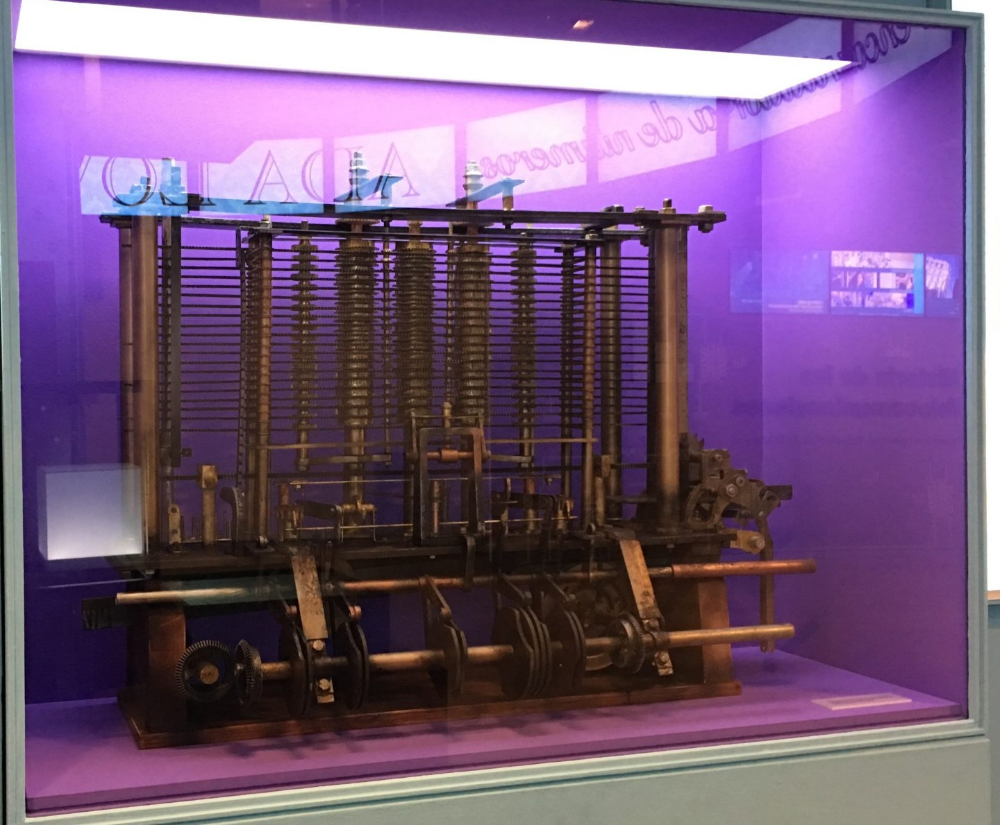

Detalles de la Máquina Analítica
La Máquina Analítica fue un diseño propuesto por Charles Babbage a principios del siglo XIX. Se trataba de un dispositivo mecánico programable capaz de realizar cálculos matemáticos complejos.
Aunque la Máquina Analítica nunca fue construida durante la vida de Babbage, su diseño y conceptos sentaron las bases para la futura computación. Ada Lovelace, una matemática y escritora británica, colaboró estrechamente con Babbage y desarrolló un conjunto de instrucciones para la Máquina Analítica, lo que la convierte en la primera programadora de la historia.
El diseño de la Máquina Analítica incluía tarjetas perforadas para la entrada de datos y una unidad de procesamiento mecánica para realizar los cálculos. Aunque nunca se completó, su importancia histórica es incuestionable en el desarrollo de la informática moderna.
 Volver al inicio